VRayHairMtl
VRayHairMtl Overview
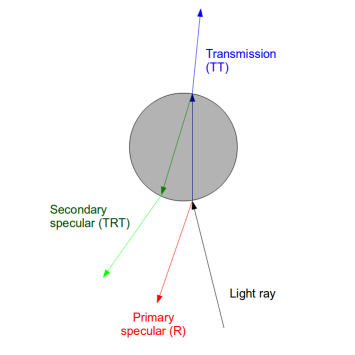 VRayHairMtl is a material that is primarily designed for rendering hair and fur. It can be used to render geometry generated through the VRayOrnatrixMod modifier, the VRayFur primitive, or the 3ds Max Hair&Fur modifier (when in "mr prim" mode).
The material is based around three components - primary specular component, secondary specular component, and a transmission component. A diffuse component is also provided for rendering of materials made up of cloth threads or other non-translucent fibers.
The primary specular component represents light that is reflected off the outer surface of a hair strand. The secondary specular component represents light that goes through the hair strand and is reflected off the back surface. The transmission component represents light that goes through the hair strand.
The image to the right illustrates the meaning of the three components:
General Parameters
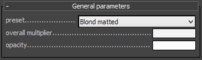 Preset - allows you to choose one of several available preset materials.
Overall Multiplier - a common color multiplier for all color components in the material (except for opacity). Used to easily change the look of the entire hair material.
Opacity - controls the transparency of the material where white is opaque, and black is fully transparent. The opacity can be mapped along the hair strands using the VRayHairInfoTex texture. Making the hair more transparent towards the tip may produce more smooth and realistic anitaliasing at the expense of increased render times. If you map the tip opacity, make sure you don't make the strands thinner at the tip as well - transparency already creates the effect of thinning strands. You can enable the Opaque for Shadows and Opaque for GI options to reduce render times for transparent hair. Note that with transparent strands, it may be necessary to increase the Max. Transp. Levels option in the global V-Ray settings too.
Example: VRayHairMtl Presets
Here are some examples of the same hair geometry rendered with different presets. The scene is illuminated with one spherical V-Ray light, with GI set to brute force for the primary GI bounces, and light cache for the secondary, with retrace enabled.
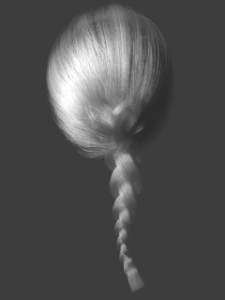
White (matte)
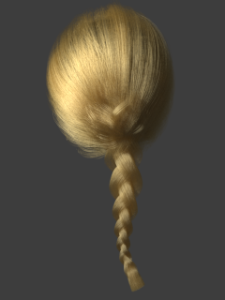
Blonde (matte)
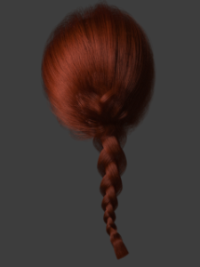
Red (matte)
Brown (matte)
Black (matte)
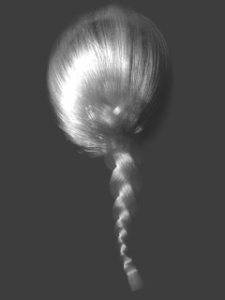
White (shiny)
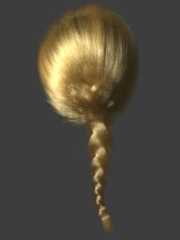
Blonde (shiny)
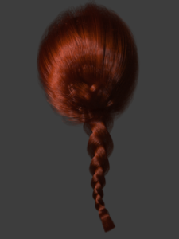
Red (shiny)
Brown (shiny)
Black (shiny)
Diffuse Parameters
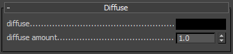 Diffuse - controls the diffuse component of the shader. Use this for materials made out of cloth threads or other non-translucent fibers, as well as for dirty hair.
Note that clean hair or fur does not normally have a diffuse component, so in that case leave the parameter black.
Diffuse Amount - the amount for the diffuse component of the material.
Primary Specular
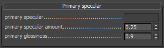 The primary specular component corresponds to light that is reflected off the outer surface of hair strands (see the figure above).
Primary Specular - the primary specular color component. Normally this is dark gray.
Primary Specular Amount - a multiplier for the primary specular color.
Primary Glossiness - the glossiness for the primary specular component. Values closer to 1.0 make the hair more shiny and sleek. Lower values give it a matted look.
Secondary Specular
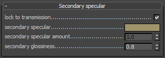 The secondary specular component corresponds to light that is reflected off the back surface of the hair strands.
Lock to Transmission - if this is enabled (the default), the color for the secondary specular component is derived from the color of the transmission component. Since a ray of light goes twice through the hair width, the color of the secondary specular component can be computed by multiplying the transmission color with itself. When this option is enabled, the hair color is mostly determined by the transmission color component.
Secondary Specular - the color of the secondary specular component. If Lock to Transmission is enabled, this value is ignored, and the secondary specular color is derived from the transmission color.
Secondary Specular Amount - a multiplier for the secondary specular component. If Lock to Transmission is enabled, this value is ignored, and the secondary specular amount is derived from the transmission amount.
Secondary Glossiness - the glossiness for the secondary specular component. Values closer to 1.0 correspond to shiny and sleek hair. Lower values correspond to matted hair.
Transmission
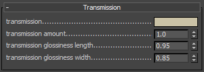 The transmission component corresponds to light that goes through the hair strands.
Transmission - the color for the transmission component. When Lock to Transmission is enabled, this color determines the overall hair color.
Transmission Amount - the amount of the transmission component.
Transmission Glossiness Length - the glossiness of the transmission along the hair strand length. See the Examples for a demonstration of the effect of this parameter.
Transmission Glossiness Width - the glossiness for the transmission component across the hair strand width. See the Examples for a demonstration of the effect of this parameter.
Example: Transmission Glossiness Length and Width Parameters
This example shows the effect of the Transmission Glossiness Length and the Transmission Glossiness Width parameters. It shows a number of vertical strands (in this case, produced by VRayFur) lit from behind by a spherical light.
Note how each parameter changes the way light scatters along the length and the width of the strands. Higher values for the length glossiness compress the transmission highlight along the strand length, while lower values expand it.
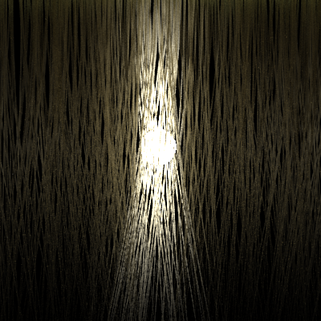
Length 0.87
Width 0.98
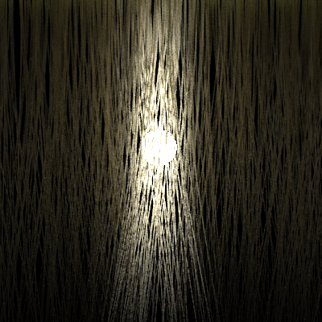
Length 0.85
Width 0.95
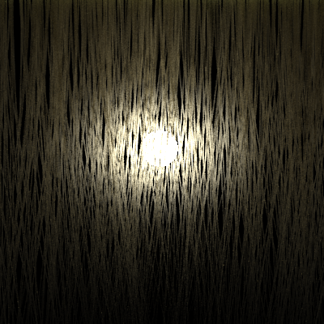
Length 0.95
Width 0.85
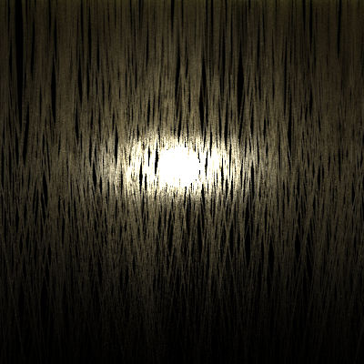
Length 0.98
Width 0.87
Options
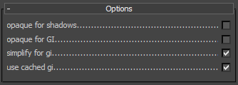 Opaque for Shadows - when this is enabled, the hair material is always opaque for shadow calculations. This speeds up the rendering of transparent hair.
Opaque for GI - when this is enabled, the hair material is always opaque for GI calculations. This speeds up the rendering of transparent hair.
Simplify for GI - when enabled, a simplified diffuse version of the BRDF is used for GI calculations. This may speed up the rendering of hair but may significantly change the final look.
Use Cached GI - this option is similar to the Use Irradiance Map option for the VRayMtl material; if it is disabled, the hair material will always be calculated with brute force GI.
Example: Effect of GI on Hair
This example shows how important GI (multiple scattering) is for the appearance of hair, especially bright hair. The top row shows several of the presets rendered without GI, and the bottom shows the same scene when GI is enabled. Again, GI is brute force and light cache has retrace. The scene GI environment is black so that a spherical area light is the only light source.
GI is Disabled
GI is Enabled
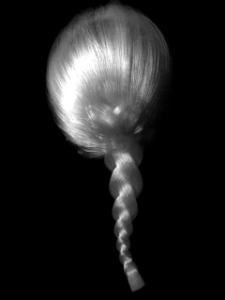
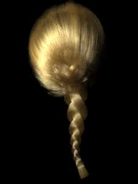
Example: Strand Taper vs Transparency Mapping
This example shows how transparency mapping can be used to simulate hair thinning towards the tips with improved quality. Since transparency also increases render times, the VRayHairMtl material provides two options to optimize this - the Opaque for Shadows and Opaque for GI options allow to skip the transparency calculations for shadow and GI rays, thus speeding up the rendering.
For the first image, the thinning of the strands towards the tips was done by setting the Taper parameter of VRayFur to 1.0. The opacity of the hairs for the 2nd, 3rd and 4th image is done with the VRayHairInfoTex texture in the Opacity slot of the VRayHairMtl material, while keeping the Taper parameter in VRayFur to 0.0. The scene is illuminated with one point light with sharp raytraced shadows to better show the difference between the options. Note how opacity mapping improves the antialiasing of the hair, while still preserving the same overall look, at the expense of somewhat increased render times. However, the first image also required increased AA samples compared to the rest.
Note that using transparency for the strands may require increasing of the Max. Transp. Levels option in the global V-Ray settings, although it was not necessary for this particular case.
Hair geometry with taper.
Render time: 1m 6s
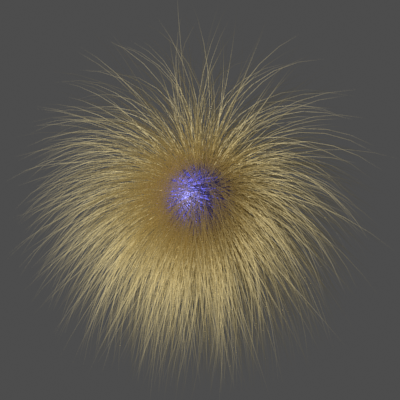
Hair geometry without taper, with opacity mapping.
Render time: 2m 14s
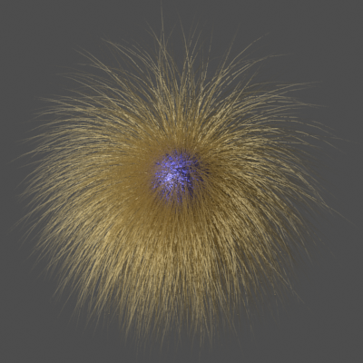
Hair geometry without taper, with opacity mapping, both Opaque for Shadows and Opaque for GI enabled.
Render time: 1m 46s
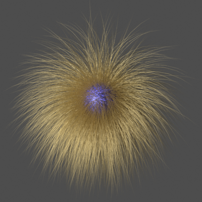
Hair geometry without taper, with opacity mapping, Opaque for GI enabled,
Render time: 1m 57s
Maps
The parameters in this section allow the various components to be mapped with textures. The VRayHairInfoTex texture can be used for mapping a parameter along the strand length or to get the color from the 3ds Max Hair & Fur modifier.
Notes
-
The preferred method for rendering objects with the VRayHairMtl material is with GI enabled, Primary Engine set to Brute force, and the Secondary Engine set to Light cache with the Retrace Threshold enabled. Because of the fine details in hair objects, the irradiance map may produce too much flickering in animations.
-
Global Illumination is vital for realistic rendering of hair, especially with bright hair color.
-
Proper gamma workflow is essential for realistic rendering of hair.
-
To apply the VRayHairMtl material to a 3ds Max Hair & Fur modifier, use the mr Parameters section as described here.
References and Links
Here is a list of links and references used when building the VRayHairMtl material.
-
[1] J. T. Kajiya, T. L. Kay, Rendering Fur with Three-dimensional Textures, SIGGRAPH'89: Proceedings of the 16th annual conference on Computer graphics and interactive techniques
Presents one of the earliest shading models for rendering hair. -
[2] S. Marschner, H. W. Jensen, M. Cammarano, S. Worley, P. Hanrahan, Light Scattering from Human Hair Fibers, SIGGRAPH'03
An online version of this paper can be found at http://graphics.stanford.edu/papers/hair/
Introduces a three-component shading model for hair which produces quite realistic results, but is somewhat difficult to control. -
[3] I. Sadeghi, H. Pritchett, H. W. Jensen, R. Tamstorf, An Artist-Friendly Hair Shading System, SIGGRAPH'10
An online version of this paper can be found at http://www.disneyanimation.com/library/a56-sadeghi.pdf
Simplifies the three-component model from [2] and makes it easier for users to adjust the separate components.